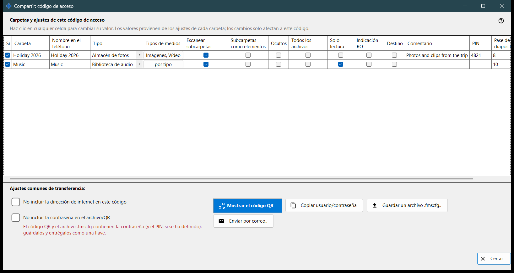
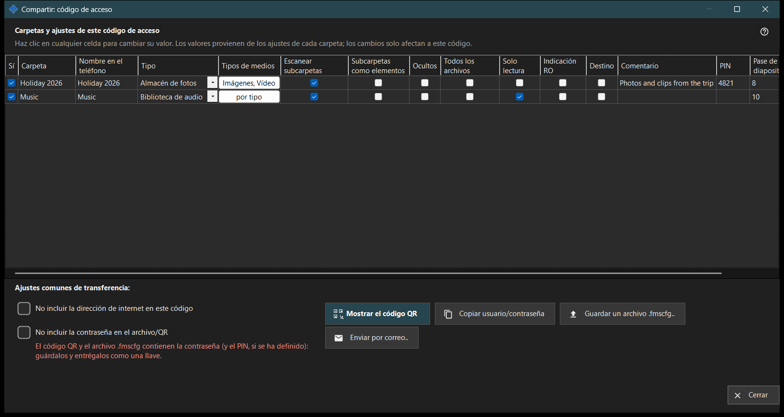

Compartir: código de acceso
Para qué sirve
Crea el código de acceso para un teléfono: un código QR y un archivo .fmscfg que contienen la dirección, el usuario y las carpetas elegidas. Se abre desde el botón «Compartir» de la ventana principal mientras el uso compartido está activado y, antes de entregar el código, comprueba que el teléfono pueda llegar de verdad al PC.


En este orden
- Marca las carpetas que irán en el código.
- Edita cualquier celda de la tabla que deba ser distinta para este código.
- Si hace falta, marca «No incluir la dirección de internet en este código» o «No incluir la contraseña en el archivo/QR».
- Espera a la comprobación de acceso.
- Muestra el código QR, guarda el archivo .fmscfg, envíalo por correo o copia el usuario y la contraseña.
Los elementos
Carpetas y ajustes para este código de acceso
Una fila por carpeta compartida, con las columnas Sí, Carpeta, Nombre en el teléfono, Tipo, Tipos de medios, Escanear subcarpetas, Subcarpetas como elementos, Ocultos, Solo lectura, Indicación RO, Destino, Comentario y Pase de diapositivas, s. Haz clic en una celda para cambiarla. Los valores parten de los ajustes propios de cada carpeta y las ediciones solo valen para este código. «Solo lectura» es un bloqueo real en el servidor; «Indicación RO» solo oculta los botones de edición en la aplicación. Una carpeta de destino siempre admite escritura, así que «Solo lectura» no se aplica a ella.
Ajustes de transferencia comunes
«No incluir la dirección de internet en este código» hace que el teléfono se conecte solo por la red local; no apaga el servidor, y el acceso desde internet para todo lo compartido se cierra en los ajustes del gestor. «No incluir la contraseña en el archivo/QR» quita la contraseña del código; entrégala por separado. Que el teléfono acepte un código sin contraseña depende de la versión de la aplicación.
Comprobación de acceso
Mientras se obtiene el estado, la ventana lo indica. Si el servidor no está en marcha, no hay ninguna carpeta marcada o no hay una dirección utilizable, una sugerencia dice qué falta. Cuando la comprobación no termina, no se entregan ni el código ni el archivo: pulsa «Comprobar el acceso de nuevo».
Mostrar el código QR
El código QR y el archivo .fmscfg abren el acceso a las carpetas y contienen la contraseña y el PIN, si se definió: guárdalos y entrégalos como una llave. Si los ajustes son demasiado grandes para un código QR, guarda el archivo y envíalo en su lugar.
Archivo, correo y usuario
«Guardar un archivo .fmscfg..» escribe el archivo; en un sistema de archivos que no puede restringir el acceso, o en una carpeta que otros pueden modificar, la ventana lo rechaza porque el archivo contiene una clave de acceso. «Enviar por correo..» adjunta el archivo con una nota para importarlo en la aplicación Android y borrarlo después. «Copiar usuario/contraseña» pone ambos en el portapapeles.
Ajustes del gestor · Ajustes de uso compartido SFTP · Ajustes del servidor de intercambio